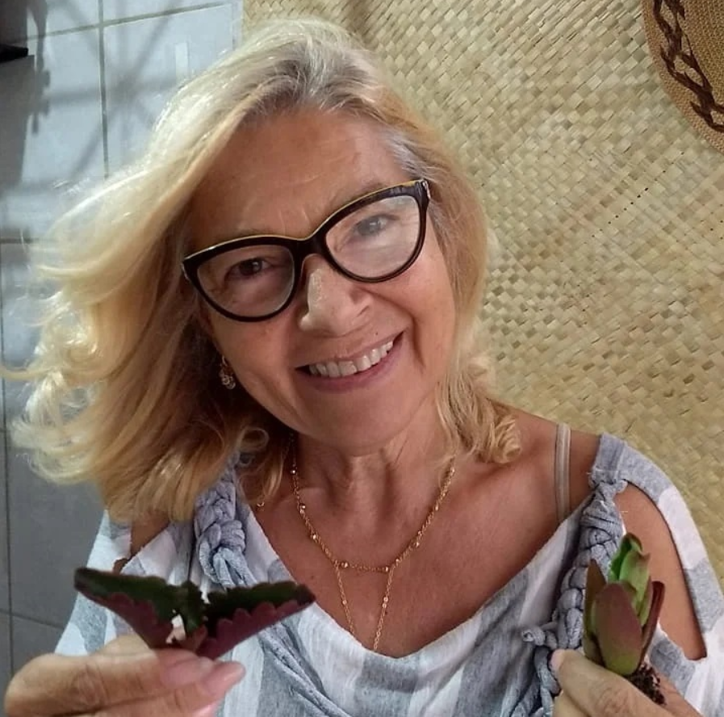

Por favor, sinta-se em casa :)
Aqui falamos um pouco sobre o Quintal de Fulô, como a paixão por plantas se transformou em uma fonte de renda.
Amigas, parceiras, mãe e filha, iniciamos essa caminhada cuidando de plantas como hobby e vimos a oportunidade de transformar isso em um business, pelo simples motivo de querermos trabalhar com algo que gostamos muito, então...por que não? :) Estamos muito felizes do sucesso que nossas platinhas estão fazendo e da alegria de nossos clientes com suas escolhidas. É um prazer te ter por aqui!
